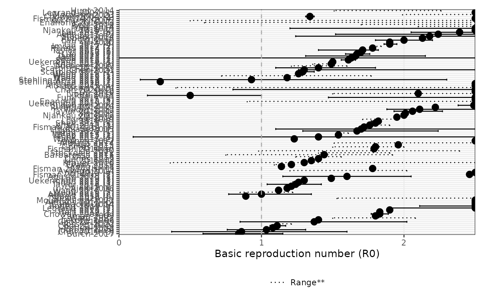

This function generates a forest plot for the reproduction number (Basic R0) using the provided data frame.
Arguments
- df
The data frame containing the necessary data for generating the forest plot.
- ulim
The upper limit for the x-axis of the plot. Default is 10.
- reorder_studies
Logical. If TRUE, the studies will be reordered using the
reorder_studiesfunction. Default is TRUE.- ...
Arguments passed on to
forest_plot_rt
Examples
df <- load_epidata("ebola")[["params"]]
#> ℹ ebola does not have any extracted outbreaks
#> information. Outbreaks will be set to NULL.
#> ✔ Data loaded for ebola
forest_plot_r0(df, ulim = 2.5, reorder_studies = TRUE)
#> Warning: The maximum basic reproduction number is 10 ; the ulim is set to 2.5 . Some
#> points may not be plotted. Consider increasing ulim.
#> Warning: Removed 22 rows containing missing values or values outside the scale range
#> (`geom_point()`).
